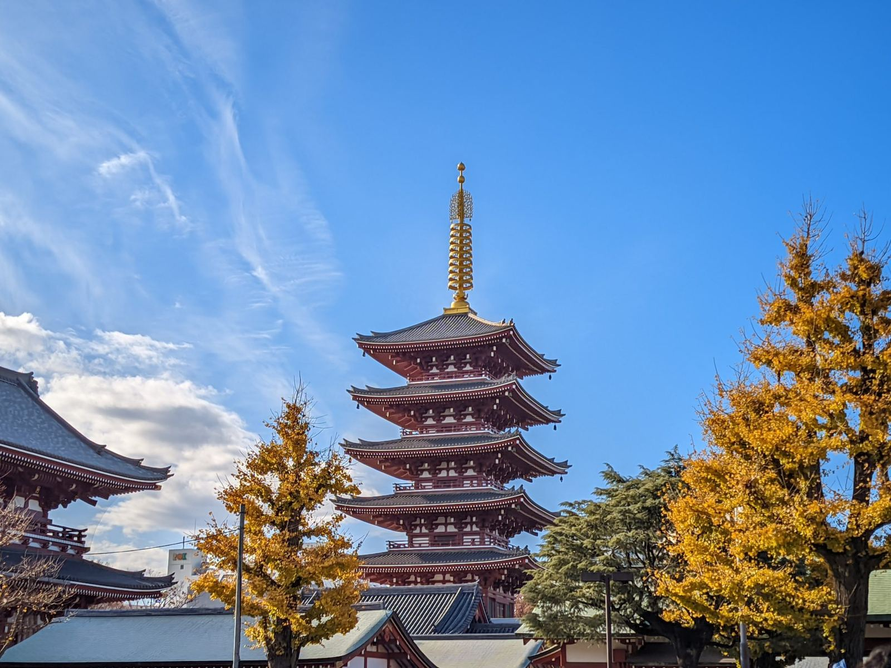

Restoran halal & masjid dekat Tokyo Skytree dan Asakusa
Kami mengelola vila privat ramah Muslim di Higashi-Mukojima, kawasan tua yang tenang di Sumida — sekitar 15 menit dari Tokyo Skytree dan 20 menit dari Asakusa. Inilah panduan yang biasa kami berikan kepada tamu kami sendiri: di mana makan halal, di mana salat, dan di mana membeli bahan halal untuk dapur khusus halal di vila kami.
Diperiksa Agustus 2026 · Waktu tempuh dari vila, pintu ke pintu
Cara kami menandai status halal. "Bersertifikat halal" berarti ada sertifikasi dari lembaga resmi yang dipublikasikan. "Milik Muslim" dan "ramah Muslim" berarti tidak ada babi dan tidak ada alkohol dalam makanannya, tetapi tanpa sertifikat yang dipublikasikan. Restoran bisa berubah — untuk makan malam yang penting, sebaiknya telepon dulu. Kami memeriksa ulang halaman ini secara rutin dan menghapus tempat yang sudah tutup.
01Restoran halal & ramah Muslim
Delapan tempat yang saat ini bisa kami rekomendasikan, diurutkan dari yang terdekat.
Sekai Cafe Oshiageセカイカフェ 押上
Ramah MuslimRuang salatKafe · ¥1.000–2.000
Tempat makan ramah Muslim terdekat dari vila. Kafe kecil di dekat Tokyo Skytree yang menyajikan burger, hidangan piring, dan aneka dessert dari bahan halal saja — tanpa babi, tanpa alkohol di dapurnya. Tersedia ruang salat.
Dari vila~15–20 menit — Keisei-Hikifune → Oshiage (2 stasiun) + jalan kaki sebentar; atau ~25 menit jalan kaki
CatatanBuka sekitar 7:30–18:00; hari libur berubah-ubah — cek dulu sebelum berangkat. (Cabang Asakusa sudah tutup; hanya Oshiage yang tersisa.)
Amara — Tokyo Solamachi 6Fインド料理 アマラ
Menu halalIndia · ¥1.500–3.000
Restoran India (rumah makan asal Kolkata yang berdiri sejak 1958) di dalam mal Solamachi, tepat di kaki Tokyo Skytree — kari, naan, dan tandoori dengan menu halal. Pilihan paling praktis untuk digabung dengan kunjungan ke Skytree; ruang salat resmi Skytree hanya berjarak beberapa lantai (lihat di bawah).
Dari vila~15 menit — Keisei-Hikifune → Oshiage; Solamachi berada tepat di atas stasiun
Bersertifikat halal (Japan Halal Foundation)Yakiniku wagyu · mulai ¥8.800
Pilihan untuk makan malam istimewa: yakiniku wagyu Kuroge A5, bersertifikat halal dari Japan Halal Foundation, hanya satu jalan dari gerbang Kaminarimon. Restoran saudaranya di gedung yang sama menyajikan sukiyaki wagyu halal. Reservasilah lebih dulu — tempat ini populer.
Dari vila~20–25 menit — jalur Tobu dari Higashi-Mukojima → Asakusa + 3 menit jalan kaki
Alamat4F, 2-1-13 Kaminarimon, Taito-ku · Situs resmi →
Dikenal sebagai restoran sushi bersertifikat halal pertama di Jepang: kecap asin halal, dan nasinya tanpa mirin maupun sake. Konter yang tenang di sisi utara Kuil Senso-ji, dengan ruang salat untuk pelanggan di lantai dua. Reservasi dianjurkan.
Dari vila~25–30 menit — Tobu → Asakusa + 10 menit jalan kaki
Ramen yang benar-benar bisa Anda nikmati: kuah dari tulang wagyu, bukan babi, dari grup di balik yakiniku halal Gyumon yang terkenal di Shibuya (fokus halal sejak 2007). Ada juga paket gyukatsu, plus ruang salat dengan tempat wudu di lokasi.
Dari vila~25–30 menit — Tobu → Asakusa + 8 menit jalan kaki
Restoran Tionghoa-Islam milik Muslim yang dicintai komunitas Muslim Tokyo — lebih dari lima belas hidangan daging kambing, hotpot tulang kambing, dan mi tarik buatan tangan. Porsinya besar, harganya jujur, buka setiap hari.
Dari vila~25 menit — Oshiage → Kinshicho (jalur Hanzomon, 1 stasiun) + 3 menit jalan kaki
Kari dan biryani rumahan khas Bangladesh di sebuah lantai dua dekat Stasiun Kinshicho — favorit tersembunyi para penulis kari Jepang, dan sangat bersahabat di kantong. Dikelola orang Bangladesh; jika sertifikasi ketat penting bagi Anda, pastikan detailnya langsung di tempat.
Dari vila~25–30 menit — Oshiage → Kinshicho + 4 menit jalan kaki
Alamat2F, 3-9-24 Kotobashi, Sumida-ku · Google Maps →
INDO HALAL KITCHEN, Kinshichoインドハラールキッチン
Milik MuslimBiryani · ¥1.000–1.999
Konter mungil milik Muslim yang terkenal dengan biryaninya, buka sampai larut (hingga pukul 1:00 dini hari). Hanya ada enam kursi — datanglah lebih awal atau di luar jam ramai, dan telepon dulu jika Anda datang khusus dari jauh.
Dari vila~25–30 menit — Oshiage → Kinshicho + 2 menit jalan kaki
Sekadar mengingatkan: beberapa restoran halal yang masih muncul di panduan lama — termasuk Naritaya Halal Ramen Asakusa dan Sekai Cafe Asakusa — tampaknya sudah tutup permanen. Jika sebuah artikel blog berumur lebih dari setahun, cek ulang dulu sebelum berjalan ke sana.

Sensoji, Asakusa — semua masjid di bawah ini terjangkau dari sudut kota ini
02Masjid & ruang salat
Vila kami sendiri memiliki dua ruang salat khusus dengan penanda arah kiblat — daftar berikut untuk saat Anda sedang bepergian.
Masjid Darul Arqam — Asakusa Mosqueダールル・アルカム・マスジド
Masjid penuhSalat Jumat 12:30 / 12:45
Masjid lingkungan vila kami, sekaligus masjid penuh yang terdekat: sekitar 20–25 menit jalan kaki menyeberangi Sungai Sumida lewat Jembatan Shirahige. Dikelola oleh Islamic Circle of Japan, dengan fasilitas wudu (air hangat di musim dingin) dan khutbah Jumat pukul 12:30. Selama Ramadan, masjid ini mengadakan buka puasa bersama dan Tarawih setiap malam.
Tokyo Skytree memiliki ruang salat resmi di Group Floor lantai 1 — ruangan terpisah untuk pria dan wanita, gratis, terbuka untuk siapa saja. Tidak ada tempat wudu khusus (gunakan wastafel toilet). Jika sulit menemukannya, tanyakan reihai space di konter informasi mana pun.
Dari vila~15 menit · Tokyo Skytree Town, 1-1-2 Oshiage · Panduan lantai →
Masjid As-Salaam, Okachimachiアッサラームマスジド
Salat Jumat 12:00 / 12:45 / 13:20
Masjid yang terkelola rapi di dekat Okachimachi dengan tiga gelombang Salat Jumat — praktis digabung dengan belanja halal di Ameyoko, hanya dua menit jaraknya. (Gedung baru yang lebih besar di dekatnya sedang direncanakan — cek situs mereka untuk kabar terbaru.)
Dari vila~30–35 menit · 4-6-7 Taito, Taito-ku · Situs resmi →
Tokyo Camii東京ジャーミイ
Masjid terbesar di JepangWisata setengah hari
Masjid terbesar dan terindah di Jepang, bergaya Utsmani, dengan pusat kebudayaan Turki dan pasar halal. Realistisnya 55–70 menit perjalanan — jadikan wisata setengah hari, bukan tempat salat harian. Azan Jumat pukul 12:30; ada tur berpemandu di akhir pekan.
Alamat1-19 Oyama-cho, Shibuya-ku (Stasiun Yoyogi-Uehara) · Info kunjungan →
03Belanja bahan halal untuk dapur vila
Dapur kami khusus halal — babi dan alkohol tidak pernah masuk ke dalamnya. Berikut tempat mengisi kulkas Anda.
Dalam jarak jalan kaki
Gyomu Super Hikifune (~10–12 menit jalan kaki) — supermarket diskon yang jaringannya menjual lini produk bersertifikat halal, misalnya ayam beku Brasil dengan sertifikat tercetak di kemasannya. Penting: ini supermarket biasa yang juga menjual babi dan alkohol — hanya produk dengan tanda halal di kemasan yang halal, dan stoknya berubah dari hari ke hari.
Ito-Yokado Hikifune (~8–10 menit jalan kaki, di Stasiun Keisei-Hikifune) — supermarket lengkap untuk sayuran, buah, ikan segar, beras, dan telur.
LIFE Higashi-Mukojima (~10 menit jalan kaki) — supermarket lengkap lainnya, buka lebih pagi.
Belanja halal sesungguhnya
Kameido Halal Food (~25 menit) — toko bahan makanan halal yang dikelola orang Bangladesh, menjual ayam dan daging kambing yang diproses secara halal, bumbu, dan beras. Toko halal khusus yang terdekat dari vila.
Ameyoko, Ueno (~30 menit) — jalan pasar yang terkenal itu: basemen Center Building penuh bahan dan bumbu Asia (lantainya campur — periksa kemasan), dan Masjid As-Salaam hanya dua menit dari sana.
Shin-Okubo / Ikebukuro (~40–50 menit) — supermarket halal khusus di Tokyo: Nasco Halal Food, Toko Indonesia (tempe, sambal, Indomie), dan Al-Flah. Layak untuk satu kali belanja besar bila Anda menginap lama.
Pesan antar daring — Nasco, AL MODINA, dan lainnya mengantar daging halal ke Tokyo dalam semalam; pesan di hari kedatangan, masak keesokan malamnya.
THE HOSPITEL by Dr. adalah vila privat ramah Muslim untuk hingga 10 tamu — dua ruang salat dengan penanda arah kiblat, dapur khusus halal, kamar mandi siap wudu, dan desain tidur yang dirancang dokter. Satu grup per malam.